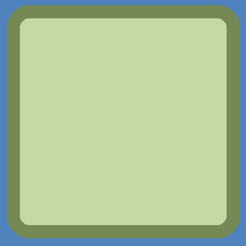

110創造力教育 創造力PISA試題 科教碩60945001s楊家慎
塑膠封膜
大眾高度關注手搖杯、塑膠杯的環保議題，但飲料杯的封口膜相對討論度較低，塑膠封口膜當初是一個快速、方便、有效包裝的創新設計，但一樣會造成環境問題，且加熱塑膠封膜可能產生健康風險，因此也值得討論如何取代或創新設計。
▲(圖3)各式各樣的塑膠封膜。
圖片引用自https://cdn.ready-market.com/106/085582cc//Templates/pic/IMG-Phoenixes-Cups_big.jpg?v=10fa81f6